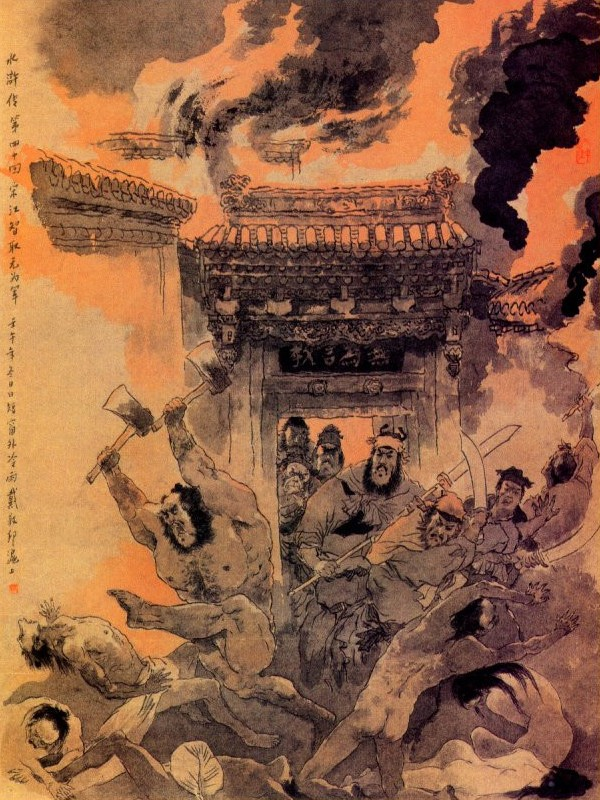
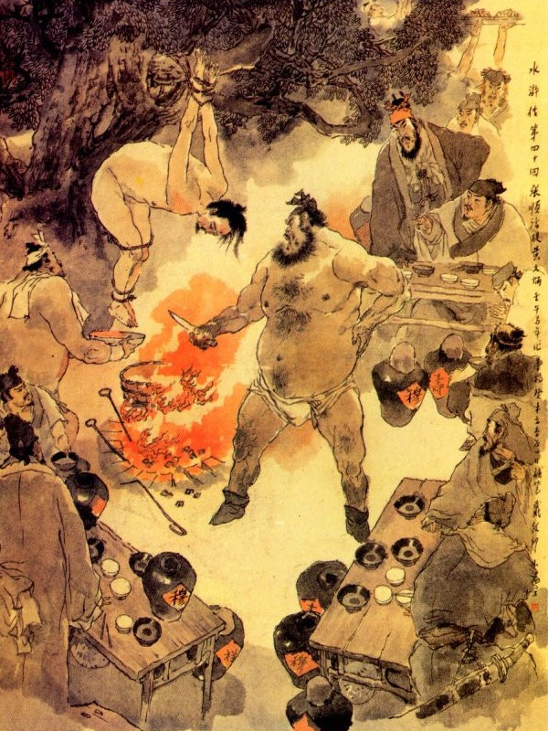
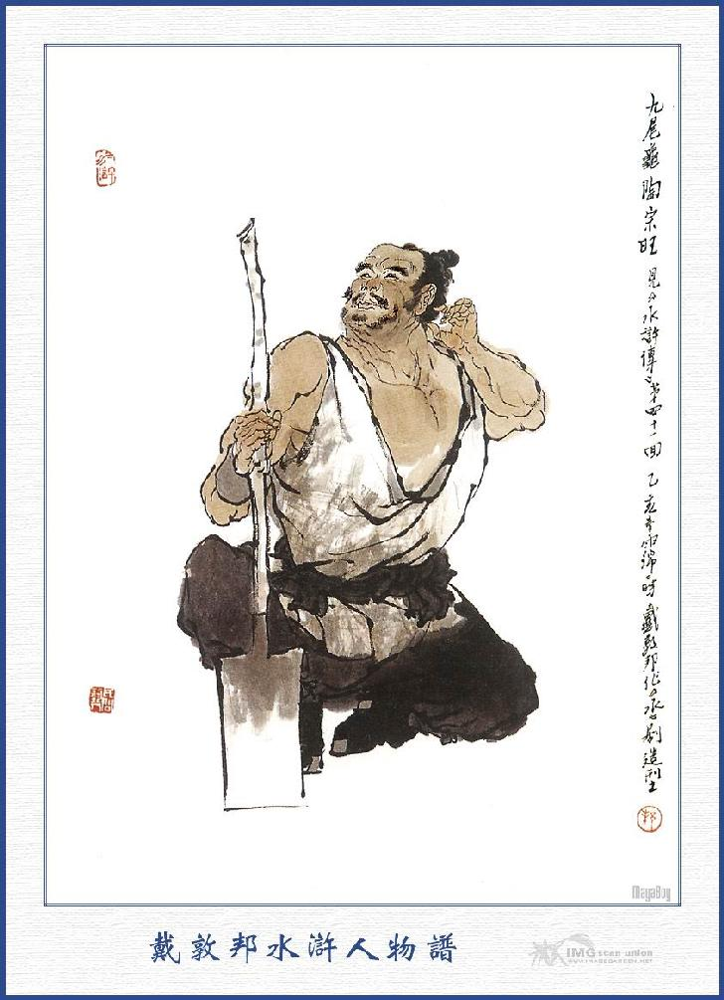

Bấy giờ quân mã thành Giang Châu bị bọn hảo hán Lương Sơn Bạc đánh riết, phải rút lui về thành, bọn Lương Sơn theo đuổi đến thì cửa thành đã đóng giữ kiên cố, ném đá bắn tên ra, bọn hảo hán vây hãm vài ngày, xét đánh thành không tiện, mới rút lui về miếu Bạch Long để xuống thuyền, Tiều Cái kiểm điểm số quân đầy đủ rồi xuống thuyền lại gặp gió xuôi, nên đi nhanh chóng. Ba chiếc thuyền chở đầy người ngựa, thẳng tới Mục Gia Trang, mới dẫn chúng lên bờ. Mục Hoằng mời các vị hảo hán vào trang yên nghỉ. Mục Thái Công ra đón mời bọn Tống Giang vào.
Mục Thái Công nói:
- Các vị Đầu Lĩnh mấy hôm nay khó nhọc, hãy vào ở trang đây tạm nghỉ và sửa sang quần áo, khí giới, nhất diện sai người giết bò, lợn, gà, vịt, cùng bầy các trức trân hào dị vị để thiết đãi.
Trong khi chè chén chuyện trò. Tiều Cái nói anh em họ Mục rằng:
- Nếu không được hai vị Ca Ca đem không xuống cứu thì chúng tôi tất bị bắt chứ không chơi.
Mục Công hỏi rằng:
- Vì cớ sao, các ông lại đi đường ấy?
Lý Quỳ đáp luôn rằng:
- Chúng tôi chỉ chọn chỗ nào đông người là chém giết để đi rồi sau họ đến đuổi chúng tôi, có ai lại gọi nó đến bao giờ?
Chúng nghe nói đều vỗ tay cả cười. Tống Giang đứng dậy nói với mọi người rằng:
- Tống Giang tôi nếu không được các ngài cứu giúp thì tất là cùng với Đới Viện Trưởng chịu chết trong cơn phí mạnh, vậy ân đức ngày nay như trời như bể, biết bao giờ báo đáp cho xong? Chỉ giận tên Hoàng Văn Bính đã mấy phen độc hại chúng tôi, nếu không làm cho chúng nó biết tay thì tấm lòng phẫn hận bao giờ nguôi được. Vậy xin các vị hảo hán hãy rộng ơn đến đánh Vô Vi Quán, để bắt giết tên Hoàng Văn Bính thì lòng này mới được nguôi ngoai một chút, các ngài nghĩ sao?
Tiều Cái đáp rằng:
- Chúng ta đi thế này, chỉ khả dĩ làm một lần thì được, nếu làm đến hai lần thì tất là nguy hiểm, vì hiện nay họ phải phòng bị sẵn sàng, khó lòng mà đánh được. Vậy bắt buộc hãy cùng về sơn trại rồi cùng với Ngô Học Cứu, Công Tôn Thắng và bọn Lâm Xung, Tân Minh đến cứu, như thế thì tiện hơn.
Tống Giang nói:
- Nếu đã trở về sơn trại thì không còn thể nào mà lại đây được. Vì một sự đường sá xa xôi, hai là đất Giang Châu tất nhiên tư giấy má đi các nơi mà canh phòng cẩn mật thì bấy giờ còn làm gì được nữa? Vậy nay có muốn hạ thủ thì nhân lúc họ chưa kịp phòng bị là hơn.
Hoa Vinh nói:
- Ca Ca nghĩ thế tất là phải lắm, nhưng còn ngại vì nỗi không ai thuộc đường sang đó thì làm sao cho tiện? Việc này tất phải có người đến dò tin tức trong thành và xem xét đường đi lối lại thế nào, cùng là nhà cửa Hoàng Văn Bính ở đâu rồi mới có thể thi hành được.
Tiết Vĩnh đứng lên nói rằng:
- Chúng tôi xưa nay từng đi lại đất Vô Vi Quán, đường lối rất là quen thuộc, vậy chúng tôi xin đi thám thính một phen, chẳng hay các ngài có thuận thế cho không
Tống Giang mừng rỡ mà rằng:
- Nếu được hiền đệ đi giúp hộ cho thì còn gì bằng nữa!
Tiết Vĩnh vâng lời, liền ăn uống xong rồi từ biệt mọi người, một mình đi dò thăm tin tức. Bấy giờ bọn Tống Giang và các vị Đầu Lĩnh ở lại Mục Gia Trang, sắm sửa các đồ khí giới cung tên, cùng thuyền bè, để đợi ngày đi đánh Vô Vi Quán.
Cách hai hôm sau thấy Tiết Vĩnh dắt một người về đến gia trang mà vào lạy chào Tống Giang, Tống Giang vội đáp lễ mà hỏi Tiết Vĩnh rằng:
- Vị tráng sĩ này là ai?
Tiết Vĩnh đáp rằng:
- Người này họ Hầu tên Kiện, quê ở Hồng Đô, vốn làm nghề thợ may mà võ nghệ cũng giỏi. Trước đây có theo học Tiết Vĩnh này, người ta thấy tính khí nhanh nhẹn mà người lại đen, nên thường gọi một tên là Thông Tý Viên (Vượn nhanh tay hiện nay làm thợ may cho Hoàng Văn Bính ở Vô Vi Quán. Nhân vậy tiểu đệ mời vào đây để hỏi chuyện cho rõ.
Tống Giang nghe nói cả mừng liền mời cùng ngồi để bàn định các việc. Người này nguyên là một vị sao Địa Sát, nên tình nghĩa rất am hợp với nhau mà không chút gì trái ý.
Khi đó Tống Giang hỏi đến tin tức ở thành Giang Châu, cùng đường lối đến Vô Vi Quán.
Tiết Vĩnh đáp rằng:
- Hiện nay Xài Tri Phủ kiểm điểm các quan quân cùng dân chúng, bị chết mất hơn năm trăm người, còn bị đạn và trúng thương, không biết đến đâu mà kể? Nay đương hai người dâng biểu cáo cấp với triều đình và đóng kín cổng thành tra hỏi rất là cẩn thận. Tôi xét ra việc Ca Ca bị hại, không can thiệp gì đến Xài Tri Phủ, nguyên chỉ tại tên Hoàng Văn Bính, tam tứ phen thúc bách Tri Phủ để thi hành thủ đoạn, nên mới xảy ra đến thế. Nay chẳng may bị ta đánh cướp pháp trường thì trong thành đều nhao nhao sợ hãi mà canh giữ, không còn trễ nãi chút nào. Còn về tình thế Vô Vi Quán thì may được Hầu Kiện đây, nên mới biết rõ tất cả đầu đuôi.
Tống Giang quay sang hỏi Hầu Kiện rằng:
- Sao quan bác lại biết rõ đầu đuôi ở đấy?
Hầu Kiện đáp:
- Tôi thủa nhỏ thích nghề gươm giáo, sau nhờ được Tiết sư phụ dạy bảo nên trong lòng không dám quên ơn. Mới đây Hoàng Thông Phán có thuê tôi về may vá ở trong nhà, nhân lại được gặp sư phụ tôi, nói đến đại danh của ngài và kể câu chuyện vừa mới xảy ra, nên tôi lại càng sốt lòng muốn bái kiến tôn nhan mà vội đến đây để báo các tin tức. Nguyên Hoàng Văn Bính có một người anh ruột là Hoàng Văn Hoa, cùng một cha mẹ sinh ra. Song Hoàng Văn Hoa là người phúc đức hiền lành, bình sinh chỉ hay sửa cầu làm quán, tô tượng đúc chuông, cứu kẻ bị nguy khốn, giúp người khổ sở, cả trong thành Vô Vi ai cũng gọi ông ta là Hoàng Diện Phật (Phật mặt vàng). Còn Hoàng Văn Bính thì dẫu là một anh Thông Phán tại gia, song trong bụng rất thâm độc, xưa nay chỉ quen hãm hại người ta, bởi vậy khắp trong thành ai ai cũng gọi ông ta là Hoàng Phong Thích (Nọc ong vàng). Hai anh em ông ta ở làm hai dinh, cách nhau có một cái ngõ. Về phía bắc ở gần thành là nhà Hoàng Văn Bính, còn nhà Hoàng Văn Hoa ở gần đường cái. Chúng tôi ở đấy thường thấy Hoàng Thông Phán nói chuyện là việc đó Xài Tri Phủ bị người ta man trá, sau ông ta chỉ dẫn cho ra và bảo Tri Phủ hãy chém những người ấy đi rồi sau sẽ biểu tâu triều đình. Bấy giờ Hoàng Văn Hoa biết chuyện, vẫn thường mắng nhiếc ông ta là đồ vô phúc, độc ác, không can thiệp đến mình cũng làm hại người ta, lỡ ra lẽ trời báo ứng thì tội ấy ai mang? Đến hai ngày nay nghe nói bị cướp pháp trường thì Hoàng Văn Bính sợ hãi cuống cuồng hiện còn vào dò tin tức, để bàn định với Xài Tri Phủ ở đất Giang Châu, đến nay cũng chưa thấy về.
Tống Giang hỏi:
- Nhà Hoàng Văn Bính với nhà anh hắn ta cách nhau xa hay gần?
- Nguyên là một nhà ngăn ra làm đôi, khoảng giữa chỉ cách một cái vườn mà thôi.
- Nhà anh ta có bao nhiêu người? Tất cả có mấy gian phòng?
- Nhà ấy tất cả trai gái có tới bốn năm mươi người, Tống Giang nghe đến đó, có vẻ vui mừng mà rằng:
- Thực là trời cho ta được báo thù, nên mới đưa người dẫn lối đến đây, song việc này tất phải nhờ anh em hết sức ra tay mới được.
Mọi người đều vỗ tay mà rằng:
- Chúng tôi xin liều chết xông pha, để khu trừ gian nhũng mà báo thù rửa hận cho Ca Ca.
Tống Giang lại nói rằng:
- Việc này là chỉ tại Hoàng Văn Bính, chứ không can thiệp gì đến thành Vô Vi; Vả chăng anh hắn là người nhân đức thì ta cũng không nên hại đến, để thiên hạ chê cười. Anh em đi đó, chớ làm một điều chi tàn hại đến dân mới được. Nay tôi có một kế này, mong anh em hết sức giúp tôi cho xong việc.
Các vị Đầu Lĩnh đều đồng thanh mà rằng:
- Chúng tôi xin vâng lệnh Ca Ca chỉ giáo.
Tống Giang lại nói rằng:
- Việc này tất phải phiền đến Thái Công, sắp cho tám chín mươi túi cát, hơn trăm bó cỏ không và trăm chiếc thuyền lớn, hai chiếc thuyền nhỏ, để nhờ Trương Thuận, Lý Tuấn cưỡi hai chiếc thuyền con, còn trăm chiếc thuyền lớn thì xin để Trương Hoành, ba anh em họ Nguyễn, Đồng Mãnh, cùng mọi người bạo nghề thủy thủ coi giữ giúp cho như thế mới có thể thi hành được.
Mục Hoằng đáp rằng:
- Hiện ở nhà tôi có đủ các thức túi vải cỏ khô, cùng những người quen nghề thủy thủ, xin Ca Ca cứ sai dùng cho được việc.
Tống Giang lại bảo với mọi người rằng:
- Nay phiền Hầu huynh dẫn Tiết Vĩnh, Bạch Thắng vào thành Vô Vi Quán trước, đợi đến canh ba tối ngày mai, hễ nghe thấy tiếng chim đeo nhạc bay lên thì Bạch Thắng lên thành cắm một lá cờ lụa trắng ở gần nhà Hoàng Văn Bính, để ra hiệu cho biết lối lên thành. Thạch Dũng, Đỗ Thiên thì giả làm ăn mày nấp ở bên tả gần thành, cứ nom lửa làm hiệu mà xông ra giết bọn canh cửa. Còn Lý Tuấn với Trương Thuận thì đi lại coi sóc trên sông, để đợi khi tiếp ứng.
Tống Giang cắt đặt xong rồi, Tiết Vĩnh, Bạch Thắng vâng lời đi trước Thạch Dũng, Đỗ Thiên giả dạng ăn mày đi sau, đều thắt khí giới trong mình cả. Đoạn rồi đem các đồ cỏ khô túi cát xếp đặt lên thuyền và sửa soạn các đồ khí giới cùng các vị hảo hán, chia nhau xuống phục dưới thuyền. Tiều Cái, Tống Giang cùng Hoa Vinh, xuống thuyền Đồng Uy; Yến Thuận, Vương Nụy Hổ, Trịnh Thiên Thọ xuống thuyền Trương Hoành; Đới Tung, Lưu Đường, Hoàng Tín, xuống thuyền Nguyễn Tiểu Nhị; Lã Phương, Quách Thịnh, Lý Lập xuống thuyền Nguyễn Tiểu Ngũ; Mục Hoằng, Mục Xuân, Lý Quỳ, xuống thuyền Nguyễn Tiểu Thất. Còn Chu Quý, Tống Vạn ở nhà Mục Thái Công để dò xem tin tức Giang Châu. Lại sai Đồng Mãnh chở chiếc thuyền con đi trước, để dò thăm đường đất. Còn bao nhiêu bọn lâu la cho nấp ở trong thuyền rồi đêm hôm đó sai thủy thủ cùng trang khách, nhổ sào mà kéo thẳng đến Vô Vi Quán.
Bấy giờ cuối tháng bảy, đêm hiu gió lạnh, trăng sáng bên sông, bóng nước non xanh, trên dưới một mầu xanh biếc. Vào khoảng cuối trống canh một, các thuyền đã đến bến sông Vô Vi, chọn một nơi ngàn lau rậm rạp mà đậu vào ở đó.
Được một lát thấy Đồng Mãnh chèo thuyền tới nơi báo rằng:
- Trong thành hiện vẫn còn im phăng phắc, không có điều chi là trở ngại cả. Tống Giang nghe báo, liền gọi thủ hạ cho khiêng túi cát cùng cỏ khô, để lên bộ mà lên tới thành.
Khi nghe tiếng trống đã điểm canh hai, Tống Giang cho đem cả cỏ khô túi cát xếp ở bên thành, để Trương Thuận, ba anh em họ Nguyễn cùng Đồng Uy, Đồng Mãnh ở lại coi thuyền và tiếp ứng, còn bao nhiêu các vị hảo hán đều sửa soạn quân khí mà đi lên thành. Khi đến cửa Bắc, còn cách độ nửa dặm đường, Tống Giang sai thả chim đeo nhạc bay lên. Đoạn thấy có một ngọn trúc buộc lụa trắng, phất phơ dựng ở trước ngọn gió trên thành, Tống Giang lại sai quân sĩ chất túi cát vào bên thành rồi cho vác cỏ khô đem cả lên thành.
Bấy giờ thấy Bạch Thắng ở trong chạy ra tiếp ứng, trỏ bọn hảo hán mà rằng:
- Nhà Hoàng Văn Bính ở ngay ngõ kia.
Tống Giang hỏi ngay Bạch Thắng rằng:
- Tiết Vĩnh, Hầu Kiện bây giờ ở đâu?
Bạch Thắng đáp rằng:
- Hiện bây giờ cả hai đã vào nhà Hoàng Văn Bính chỉ đợi Ca Ca đến đó thôi.
Tống Giang lại hỏi:
- Thạch Dũng, Đỗ Thiên ở đâu?
Bạch Thắng đáp rằng:
- Hai người ấy hiện ở bên tả thành để đợi.
Tống Giang nghe nói liền dẫn bọn hảo hán vào thành, thẳng lẻn vào nhà Hoàng Văn Bính. Khi tới nơi, thấy Hầu Kiện đương nấp ở hiên phòng, Tống Giang khẽ gọi, ghé tai bảo thầm rằng:
- Anh ra cửa sau mở cửa cho quân sĩ mang cỏ khô chất vào trong và bảo Tiết Vĩnh đem lửa đốt lên rồi đến cửa nhà Hoàng Văn Bính kêu lên rằng:
- "Nhà quan nhân bên kia bị cháy, cho đem các đồ vật sang gửi". Để họ mở cửa ra rồi ta có cách.
Tống Giang lại bảo các vị hảo hán chia làm hai đầu để coi giữ.
Bấy giờ Hầu Kiện đến mở cửa vườn sau, cho quân sĩ đem cỏ vất vào, tìm lửa đưa cho Tiết Vĩnh đốt. Đoạn rồi Hầu Kiện chạy lẻn ra đập cửa sau nhà Hoàng Văn Bính mà nói lên rằng:
- Nhà quan nhân bên kia bị cháy, có ít đồ đạc, cho đem sang để nhờ, xin mở cửa ra cho mau.
Trong nhà nghe thấy tiếng gọi, vội vàng trở dậy, liền trông sang bên cạnh vách thấy lửa sáng rực trời, liền hớt hãi mở cửa đi vào. Bọn Tiều Cái, Tống Giang thừa thế kéo ùa vào rồi ai nấy ra tay chém giết, thấy người nào vào là trừ ngay người ấy, bốn năm mươi người lớn nhỏ trong nhà Hoàng Văn Bính, không còn sống sót một ai, chỉ còn sót Hoàng Văn Bính tìm không thấy. Các vị hảo hán liền thu thập các đồ hòm siểng gia tài cùng các đồ kim ngân bảo vật là của khoét hại dân gian khi trước mà kêu báo hiệu nhau lên thành.
Đương khi ngọn lửa mới nổi thì bọn Thạch Dũng, Đỗ Thiên rút dao ra giết chết người lính canh cửa rồi thấy dân sự nhao nhao bảo nhau đi ra lấy khao lấy thanh để đến chữa cháy. Thạch Dũng, Đỗ Thiên bèn quát lên bảo rằng:
- Chúng bay đi về ngay nhà không có việc chi mà lại chạy ra đó.
Tụi dân chúng thấy vậy, có kẻ còn đương nghi ngờ thì bỗng thấy Hắc Toàn Phong Lý Quỳ đương múa đôi đại phủ mà hăng hái xông vào; Bấy giờ ai nấy kinh sợ bảo nhau vác khí giới chạy trốn hết cả. Mặt thành đằng sau cũng có mấy tên lính vác câu liêm, mỏ mác ra để cứu lửa, song bị Hoa Vinh bắn chết một người đi đầu, còn thì bị Lý Quỳ thét đuổi rồi kéo nhau chạy trốn cả.

Khi đó Tiết Vĩnh lại đem lửa đến châm trước đốt sau, đốt hết cả nhà Hoàng Văn Bính, lửa cháy dần dật sáng một góc trời, như ban ngày vậy. Lý Quỳ đuổi hết lính rồi, quay ra giơ đại phủ chém đứt then sắt, phá tung cửa thành cho một nửa bọn người đi ra, còn một nửa thì trèo thành mà ra. Khi ra tới ngoài, đã thấy ba anh em họ Nguyễn và Trương Hoành, Đồng Uy, Đồng Mãnh, đều tới nơi tiếp ứng, để đem các đồ vật mà xếp xuống thuyền.
Bấy giờ mọi người ở Vô Vi Quán, đều biết tiếng bọn hảo hán ở Lương Sơn Bạc đã đánh cướp pháp trường và giết quan quân ở đất Giang Châu không biết đâu mà kể, bởi vậy anh nào cũng xanh mặt chùn gan, nấp vào một xó mà không dám theo đuổi lôi thôi. Còn bọn Tống Giang tuy đã đốt hại được nhà Hoàng Văn Bính, song hiện chưa bắt được chính kẻ oan cừu là Hoàng Văn Bính thì trong lòng còn căm tức chưa yên mà đành phải xuống thuyền kéo về gia trang họ Mục.
Nói về quan lính thành Giang Châu, trông thấy bên thành Vô Vi bị cháy thì vội vàng vào báo cho Tri Phủ biết. Bấy giờ Hoàng Văn Bính còn đương ngồi bàn việc cùng Tri Phủ ở trong nhà, bỗng nghe tin báo như vậy thì hoang mang bẩm với Tri Phủ rằng:
- Nếu làng tôi bị cháy thì tôi phải xin phép về ngay mới được.
Tri Phủ nghe nói cũng vội vội vàng vàng sai mở cổng thành rồi sai bắt một chiếc thuyền quan để đưa tiễn về. Hoàng Văn Bính bái tạ Tri Phủ, hớt hãi đem người xuống thuyền, giục ra sức chèo mau, để về Vô Vi Quán.
Đi được một quãng, thấy lửa càng ngày càng lớn sáng cả góc trời, bọn lái đò bảo nhau rằng:
- Ngọn lửa kia ở vào bên bắc thành Vô Vi đó.
Hoàng Văn Bính nghe nói trong lòng càng nóng nẩy sổi nổi, thúc giục đi mau về xem. Khi đến giữa sông có một chiếc thuyền nhỏ, kẽo kẹt chèo qua trên mặt nước rồi một lát lại thấy chiếc thuyền con nữa chèo đến.
Bất đồ khi chiếc thuyền gần tới nơi thì đâm chạm vào chiếc thuyền quan, bọn lái đò bèn quát lên rằng:
- Thuyền bè ở đâu, sao lại chèo chở cập quạng thế?
Vừa nói dứt lời thì có anh chàng to lớn, tay cầm gậy móc đứng bên thuyền kia mà đáp lên rằng:
- Cháy ở đâu thế?
Đại hán kia nói rằng:
- Nhà Hoàng Văn Bính ở cửa Bắc, bị bọn hảo hán Lương Sơn Bạc, giết hết người nhà, cướp hết của cải rồi đốt cả nhà ở đó.
Hoàng Văn Bính nghe vậy, kinh hoảng cả người, vội buột mồm kêu lên rằng:
- Khổ chưa!
Đại hán kia nghe tiếng kêu, liền vất móc ra níu thuyền quan rồi nhảy tót sang thuyền, Hoàng Văn Bính nhanh trí khôn, vội vàng quay chạy lại sau thuyền mà nhảy tòm xuống nước. Chợt đâu thấy ai ở dưới nước nhô lên, nắm chặt lấy lưng Hoàng Văn Bính mà kéo bỏ lên thuyền. Đại hán ở trên thuyền thấy vậy liền quay lại tiếp bắt rồi đem Hoàng Văn Bính trói ghi hắn lại.
Nguyên người lặn xuống dưới nước đó là Lãng Lý Bạch Điều Trương Thuận, còn người cầm gậy móc trên thuyền ấy là Hỗn Giang Long Lý Tuấn. Khi đó bọn lái đò trong thuyền quan, thấy hai người hùng dũng như vậy thì kinh hoàng sợ hãi, chỉ cúi đầu xuống mà kêu lạy xin tha.
Lý Tuấn liền bảo rằng:
- Ta không giết các ngươi làm chi. Đây ta chỉ bắt Hoàng Văn Bính mà thôi, các ngươi mau đi về, bảo với thằng đầu lừa là thằng Xài Tri Phủ ở Giang Châu rằng: Chúng ta là hảo hán Lương Sơn Bạc, hãy gởi cái đầu lừa ấy đấy rồi nay mai ta đến lấy nghe chưa?
Bọn lái đò run lên cầm cập vâng lời răm rắp. Lý Tuấn, Trương Thuận bắt Hoàng Văn Bính lôi sang thuyền mình cho thuyền quan chèo đi rồi cũng cùng chèo mà đưa nhau về Mục Gia Trang.
Khi về tới bến, đã thấy các vị Đầu Lĩnh đứng đợi trên bờ mà mang cả hòm tiền nong lên đó. Bọn hảo hán thấy nói là bắt được Hoàng Văn Bính thì ai nấy đều hớn hở vui mà nói lên rằng:
- Ta đương muốn giáp mặt người ấy, để hỏi mấy câu đây.
Lý Tuấn, Trương Thuận giải Hoàng Văn Bính lên bờ, cho mọi người xem mặt rồi cùng nhau kéo vào Mục Gia Trang. Bấy giờ Chu Quý, Tống Vạn tiếp mọi người vào trong thảo sảnh rồi Tống Giang sai đem Hoàng Văn Bính lên, lột hết cả quần áo ướt, trói ra ngoài gốc cây dương liễu, đoạn rồi các vị Đầu Lĩnh theo thứ tự mà ngồi.
Tống Giang lấy rượu ra uống mừng, trên Tiều Cái dưới đến Bạch Thắng, tất cả hơm ba mươi vị hảo hán, đều cất chén cui mừng suốt lượt.
Khi uống rượu xong, Tống Giang trỏ vào mặt Hoàng Văn Bính mà rằng:
- Đồ khốn nạn, ta với người xưa nay có điều gì thù oán mà ngươi nỡ tâm tàn hại, đôi ba phen xui giục Xài Tri Phủ, để giết hại chúng ta là nghĩa lý gì? Ngươi đã đọc sách thánh hiền, sao còn chứa lòng hung ác làm những sự tàn nhẫn đê bèn như thế? Ta có giết cha mẹ nhà ngươi đâu mà ngươi nỡ giết ta? Anh ngươi là Hoàng Văn Hoa với người cùng một mẹ sinh ra, sao ông ta từ thiện như thế kia, khiến được khắp thành ai cũng xưng là Hoàng Diện Phật, đêm nay ta cũng không hề dám động đến nhà ông ta. Đến như ngươi thì toàn thị ỷ quyền ỷ thế, hãm hại lương dân mà làm cho đám tham quan, nên người quen đó ai cũng gọi như là Nọc ong vàng. Vậy ngày nay ta bắt được đây thì ta hãy nhổ hộ cái nọc ấy đi xem sao?
Hoàng Văn Bính nói rằng:
- Tôi đây biết tội đã nhiều, chỉ xin một chết là xong.
Tiều Cái nói rằng:
- Nếu mầy biết tội thì mày không dám làm như thế.
Tống Giang liền hỏi rằng:
- Trong anh em ai ra hạ thủ cho ta?
Nói vừa dứt lời thì Lý Quỳ nhảy lên đáp rằng:
- Tôi xin hạ thủ, để tôi xem thịt nó có béo thì đem nướng mà đánh chén.
Tiều Cái khen phải mà rằng:
- Dao nhọn và lò lửa đây cắt ra từng miếng thịt mà nhắm rượu, cho hả lòng hiền đệ ta.
Đoạn rồi Lý Quỳ vác con dao nhọn, đến trước mặt Hoàng Văn Bính, cười mà nói rằng:
- Thằng này mọi khi hay nấp ở xó nhà Xài Tri Phủ, hay nói chuyện thay đen đổi trắng. Chàng cắt mãi hết thịt đùi rồi, mới mổ bụng moi gan, để lên các vị Đầu Lĩnh làm thang tỉnh rượu.

Khi các vị giết xong Hoàng Văn Bính, liền cùng nhau vào thảo đường để mừng rỡ Tống Giang. Bấy giờ Tống Giang quỳ xuống đất trước các vị Đầu Lĩnh cũng vội vàng quỳ xuống mà đồng thanh hỏi rằng:
- Ca Ca có việc gì, xin cứ nói cho chúng tôi nghe?
Tống Giang nói rằng:
- Tống Giang tôi là kẻ bất tài, thủa nhỏ học nghề làm lại bước ra đời đã chăm chăm kết giao với các vị hảo hán anh tài, song chỉ vì chí hèn sức kém mà không sao cho được thoả dạ bình sinh. Mới đây bị đầy sang đất Giang Châu, Tiều Đầu Lĩnh và các vị hào kiệt đã hết lòng giữ lại, duy Tống Giang nhân vì kính giữ lời cha, nên không dám dấn thân vào nơi phi pháp. Song cũng may, vì đó mà qua bến Tầm Dương lại gặp được biết bao nhiêu hào kiệt, trong lòng thực vui vẻ khôn cùng. Ngờ đâu sau lại vì con say rượu nói càn, để suýt lụy đến tính mạng Đới Viện Trưởng ở đây, tội ấy tưởng không bao giờ thoát được. Nay may có các vị anh em không vì cơn nguy hiểm, xông pha vào nơi miệng rắn hang hùm mà cố sức cứu toàn tính mệnh và báo được oan cừu, ân đức thực không kém chi trời bể, song ngày nay đã làm nên tội ác, giết hại hai chốn châu thành, việc ấy tất nhiên thân tấu triều đình mà lôi thôi lắm chuyện. Vậy ngày nay Tống Giang dẫu không muốn nương tựa các vị Ca Ca ở trên núi Lương Sơn Bạc cũng không còn trốn tránh đi cho được, song không biết ý kiến các vị mới đây nghĩ sao? Nếu có đồng ý như vậy thì lập tức thu thập để đi, bằng không cũng xin tùy ý, kẻo nấn ná ở đây, sợ khi lỡ sự ra thì. Vừa nói đến đó thì thấy Lý Quỳ nhảy lên mà kêu rằng:
- Đi tất cả. Đi tất cả. Ai không đi theo thì xin tặng một nhát búa của ta là xong.
Tống Giang nói:
- Lý Quỳ thô mãng quá, việc này phải hỏi ý kiến tất cả anh em, có bằng lòng mới được.
Chúng nghe nói, liền bàn với nhau rằng:
- Bây giờ đã giết hại bao nhiêu quan quân nhân mã, quấy rồi cả hai chốn kinh thành, tất nhiên họ phải tâu với triều đình mà đem quân truy nã, nếu vậy không theo Huynh trưởng mà đồng sinh đồng tử với nhau thì cũng không còn trốn đâu cho được.
Tống Giang nghe vậy cả mừng mà bái tạ mọi người. Đoạn rồi cho Chu Quý, Tống Vạn trở về báo cho sơn trại biết trước rồi các vị hảo hán chia làm năm đội mà kéo đi sau: Đội thứ nhất: Tiều Cái, Tống Giang, Hoa Vinh, Lý Quỳ, Đới Tung, đội thứ nhì: Lưu Đường, Đỗ Thiên, Thạch Dũng, Tiết Vĩnh, Hầu Kiện; đội thứ ba: Lý Tuấn, Đồng Mãnh; đội thứ tư: Hoàng Tín, Trương Thuận, Trương Hoành, cùng ba anh em họ Nguyễn. Đội thứ năm: Mục Hoằng, Mục Xuân, Yến Thuận, Vương Nụy Hổ, Trịnh Thiên Thọ, Bạch Thắng. Tất cả năm đội hai mươi tám vị Đầu Lĩnh, đem hơn một nghìn người, cùng các tài vật lấy ở nhà Hoàng Văn Bính mà xếp vào xe mang đi.
Mục Hoằng dẫn Mục Thái Công, cùng các người nhà xếp hết tài vật châu báu lên xe; người nào không muốn theo thì cho tiền đi tìm chủ khác, còn người nào muốn theo, đều cho nhập vào một bọn, bốn đội trước thứ tự đi trước rồi Mục Hoằng thu thập xong đâu vào đấy, cho mồi lửa đốt hết trang viện, bỏ hết ruộng đất mà kéo nhau lên núi Lương Sơn.
Bấy giờ năm đội lục tục tiến đi, mỗi đội cách nhau ước chừng hai mươi dặm đất. Đội thứ nhất, Tiều Cái, Tống Giang, Hoa Vinh, Đới Tung, Lý Quỳ, cưỡi năm con ngựa, dẫn xe cộ cùng người đi theo.
Đi được ba ngày đường, đến một nơi gọi là Hoàng Môn Sơn, Tống Giang ngồi trên mình ngựa bảo với Tiều Cái rằng:
- Tòa núi này nom hình thế cổ quái lắm, tất là có bọn giặc cướp ở đây, vậy ta nên cho người đi thúc nhân mã bốn đội sau lên đây rồi sẽ cùng đi một thể.
Vừa nói dứt lời thì thấy trên góc núi trước mặt, có tiếng thanh la ấm ỹ cả lên, Tống Giang lại nói rằng:
- Đó! Có sai đâu, ta hãy thong thả đợi bọn sau lên rồi sẽ đánh cho nó một mẻ.
Nói đoạn Hoa Vinh cầm cung ra tay, Đới Tung cầm đao lớn, Lý Quỳ cầm đôi đại phủ, vây quanh Tống Giang để cùng xốc ngựa đi lên. Đi được mấy bước, thấy bên góc núi có bốn vị hảo hán, dẫn bốn năm trăm tiểu lâu la, cầm các đồ binh khí xông ra mà quát lên rằng:
- Lũ ngươi quấy rối đất Giang Châu đánh Vô Vi Quán, giết hại biết bao nhiêu quan quân dân chúng, lại toan về núi Lương Sơn. Bốn anh em ta đợi đã lâu, có biết phép ra cứ để Tống Giang lại đó; thì ta tha tất cả cho mà đi.
Tống Giang nghe nói, liền xông ra nhảy xuống ngựa, quỳ xuống đất mà nói rằng:
- Tôi là Tống Giang bị người ta vu oan hãm hại, không biết kêu nói vào đâu, may được hào kiệt bốn phương có lòng thương mà cứu cho toàn tính mệnh, nay qua đây không biết là nơi nào, lỡ xúc phạm đến bốn vị anh hùng, vậy xin bốn ngài đón tay làm phúc, tha cho một chút thân tàn, thực là vạn phúc.
Bốn vị hảo hán kia nghe Tống Giang nói, liền nhảy xuống ngựa, vất bỏ quân khí ra rồi chạy lại quỳ xuống đất mà rằng:
- Bốn anh em chúng tôi, chỉ được nghe tiếng Sơn Đông Cập Thời Vũ Tống Công Minh mà không sao cho được gặp mặt? Nay nói Ca Ca ở đất Giang Châu bị hãm hại, anh em chúng tôi đã bàn nhau toan kéo đến phá nhục để cứu Ca Ca, song không biết có đích thực hay không, nên chưa dám động. Mới đây sai tiểu lâu la đi đến Giang Châu thám thính, mới biết đã có các vị hảo hán đánh cướp pháp trường làm cho náo động đất Giang Châu mà cứu Ca Ca về trấn Yết Dương và đốt giết nhà Hoàng Thông Phán ở Vô Vi Quán rồi sắp sửa kéo về đại trại. Nhân vậy chúng tôi đoán chắc thế nào Ca Ca cũng qua đến lối này, nên phải hỏi kỹ càng cho đích xác rồi mới dám nói ra như thế, dám xincc thứ lỗi cho. Nay may được Ca Ca qua tới chốn này xin mời Ca Ca vào chơi tiểu trại, gọi là dâng chén rượu tiếp phong và xin đón các vị hảo hán cùng quá chân vào đó rồi sẽ khởi trình.
Tống Giang cả mừng rồi đứng dậy đỡ bốn vị hảo hán lên; mà hỏi họ tên. Người thứ nhất họ Âu tên Bằng, tự là Vân Kim Xí; quê ở Hoàng Châu, vốn coi quân bộ ở Đại giản khi trước, sau nhân trái ý với quan trên mà phải bỏ trốn vào nơi rừng núi; Người thứ hai họ Tưởng tên Kính, vốn người Hồ Nam, ở đất Đàm Châu, nguyên là tay cử tử xuất thân, sau vì thi cử không đỗ, liền bỏ văn sang võ, theo họ lược thao, tinh giỏi tính toán võ nghệ không kém ai, binh pháp cũng hơi thạo, nhân thế người ta thường gọi là Thần Toán Tử (tính toán như Thần): Còn người thứ ba họ Mã tên Lân, quê ở Kim Lăng, Kiến Khang là một tay nhàn lãng xuất thân, thổi thiết địch hay, múa đại đao giỏi, mấy trăm người cũng không ai dám đến gần, nhân thế người ta đặt là Thiết Địch Tiên; Người thứ tư họ Đào tên Tôn Vượng, quê ở Quảng Châu, vốn xưa là người điền hộ, khiến cây thiết tiêu rất khỏe, múa lân đao cũng giỏi, người ta thường gọi là Cửu Vĩ Quy (rùa chín đuôi).

TÔN VƯỢNG
Bấy giờ bốn vị hảo hán đón tiếp Tống Giang, hai tiểu lâu la đem một bầu rượu, hai mâm thịt và một khay quả ra, để nâng chén tiếp phong. Trước hết mời Tiều Cái, Tống Giang, sau mời Hoa Vinh, Đới Tung, sau đến Lý Quỳ và cùng thi lễ chào nhau.
Được một lát đội quân mã thứ hai kéo đến, bốn vị hảo hán lại mời uống rượu rồi đón cả lên núi. Đoạn rồi sai mổ trâu giết ngựa làm tiệc và cho đón các vị hảo hán ở ba đội đi sau, cùng lên núi dự tiệc.
Trưa hôm ấy các vị đã tề tựu, cùng nhau ngồi uống rượu ở trên Tụ Nghĩa Sảnh núi Hoàng Môn. Sau Tống Giang nói với mọi người rằng:
- Phen này Tống Giang lên Lương Sơn Bạc nương nhờ Tiều Thiên Vương Ca Ca, vậy chả hay bốn vị hảo hán có thể bỏ đất này mà cùng đi đến đó được không?
Bốn tay hảo hán đồng thanh đáp rằng:
- Nếu hai vị nghĩa sĩ có lòng yêu đến cho theo thì chúng tôi tình nguyện đi hầu dưới trướng.
Tống Giang, Tiều Cái cả mừng nói rằng:
- Bốn ngài đã nghĩ đến đại nghĩa mà bằng lòng như vậy thì xin mau mau thu thập đi ngay mới được.
Nói đoạn lại cùng nhau rượu chè vui vẻ mà ở đó một đêm.
Sáng hôm sau, bọn Tống Giang Tiều Cái lại chia làm năm đội lục tục ra đi, còn bốn vị hảo hán ở Hoàng Môn Sơn cũng thu thập tài bạch kim ngân, kiểm điểm bốn năm trăm lâu la rồi đốt bỏ sơn trại mà đi vào đội thứ sáu.
Tống Giang thấy được bốn tay hảo hán quy phục thì trong lòng lấy làm mừng rỡ, vừa đi vừa nói chuyện với Tiều Cái rằng:
- Tiểu đệ từ khi ngang dọc giang hồ, dẫu bị bao phen kinh sợ, song cũng may mà kết giao được bao nhiêu hảo hán ở trên đời, như thế thực là thoả lòng quá đỗi. Phen này cùng lên sơn trại với Ca Ca, tất phải đồng tâm hiệp lực mà sống chết có nhau thì sau này mới khỏi phụ cái công giang hồ chìm nổi mà khỏi thẹn với đời.
Tiều Cái nghe nói cũng lấy làm vui mừng rồi hai người chuyện trò với nhau mà gần tới sơn trại lúc nào cũng không biết.
Các vị Đầu Lĩnh coi trại ở Lương Sơn Bạc là Ngô Dụng, Công Tôn Thắng, Lâm Xung, Tần Minh, cùng hai người Đầu Lĩnh mới là Tiêu Nhượng, Kim Đại Kiện, khi thấy Chu Quý, Tống Vạn về báo tin thì hàng ngày lại sai tiểu Đầu Mục chở thuyền ra hàng rượu của Chu Quý để đón tiếp.
Ngày hôm ấy các đội đi đến nơi, liền xuống thuyền vào bến Kim Sa rồi lên ngựa, đi về đại trại. Khi tới Đại Quan đã thấy bọn sáu người Ngô Học Cứu đem rượu ra tiếp phong rồi cùng đi vào Tụ Nghĩa Sảnh.
Vào tới nơi, đã thấy bàn ghế chỉnh tề, khói hương nghi ngút tại Tụ Nghĩa Sảnh, Tiều Cái liền mời Tống Giang làm chủ sơn trại, để ngồi vào ghế giữa.
Tống Giang khiêm tốn không nhận mà rằng:
- Tống Giang tôi đã nhờ các vị có lòng thương mà cứu cho thoát nạn, vậy chức Chủ trại đây, nguyên là Ca Ca phải giữ, có lẽ nào lại nhượng cho tôi? Nếu Ca Ca không ưng thuận mà cố nhường cho thì đệ xin chết trước cho xong, không bao giờ lại dám mang tâm như thế!
Tiều Cái không nghe mà nói rằng:
- Hiền đệ bất tất như thế? Hồi trước nếu không có hiền đệ ra tay gánh vác mà cứu cho bảy anh em chúng tôi thì còn đâu có được ngày nay, vậy ngôi Chủ trại ở đây hiền đệ không có thể nhường lại cho ai được nữa.
Tống Giang lại nói rằng:
- Nói về niên sỉ thì nhân huynh hơn Tống Giang đây mươi tuổi, vậy Tống Giang ngồi đó, chẳng hóa ra hổ thẹn lắm sao.
Nói xong liền cố nhường Tiều Cái ngồi vào ghế thứ nhất, tự mình ngồi ghế thứ hai và để Ngô Học Cưú ngồi ghế thứ ba, Công Tôn Thắng ngồi ghế thứ tư. Đoạn rồi Tống Giang nói với mọi người rằng:
Bây giờ chưa phân công lai trên dưới, vậy các Đầu Lĩnh ở Lương Sơn Bạc ngày trước, xin cứ ngồi bên hữu, còn các vị Đầu Lĩnh mới đến sau, xin ngồi về phía bên tả, đến khi có công cán thế nào; sẽ phân định thứ tự về sau.
Chúng nghe nói đều vâng lời ngồi chia ra hai bên. Dãy bên tả có Lâm Xung, Lưu Đường, Nguyễn Tiểu Nhị, Nguyễn Tiểu Ngũ, Nguyễn Tiểu Thất, Đỗ Thiên, Tống Vạn; Chu Quý. Dãy bên hữu thì các vị Đầu Lĩnh tính tuổi cao thấp rồi suy nhượng với nhau mà ngồi. Thoạt đầu Hoa Vinh ngồi trên rồi đến Tần Minh, Hoàng Tín, Đới Tung, Lý Quỳ, Lý Tuấn, Mục Hoằng, Trương Hoành, Trương Thuận, Yến Thuận, Lã Phương, Quách Thịnh, Tiêu Nhượng, Vương Nụy Hổ, Tiết Vĩnh, Kim Đại Kiện, Mục Xuân, Lý Lập, Âu Bằng, Tưởng Kính, Đồng Uy, Đồng Mãnh, Mã Lân, Thạch Dũng, Hầu Kiện, Trịnh Thiên Thọ, Đào Tôn Vượng cùng ngồi một hàng. Hai bên cộng tất cả hai mươi bốn vị hảo hán, đều hớn hở, vui mừng, mở cờ dóng trống, cùng ngồi uống rượu với nhau.
Bấy giờ Tống Giang lại đem chuyện mình kể cho các vị Đầu Lĩnh nghe mà nói rằng:
- Việc tôi chẳng qua vì tên Hoàng Văn Bính, vẽ hươu vẽ vượn, tán nghĩa mấy câu ca dao, mà bảo với tên Xài Tri Phủ là hai câu dưới, ứng vào độ số tôi là loạn ở đất Sơn Đông rồi xui Tri Phủ tiền trảm hậu tấu, nên mới như thế. Nếu không có anh em nhiệt tâm mau cứu cho thì còn khi nào được trông thấy Lương Sơn Bạc mà bàn định công việc sau này nữa.
Lý Quỳ nghe nói, vội nhảy lên mà nói rằng:
- Phải đấy, Ca Ca chính là hợp ý trời đấy. Nay dẫu bị chút khó nhọc, song thằng giặc già Hoàng Văn Bính tôi đã giết, thực là khoái lắm! Túng sử cho chúng tôi ít quân mã, chúng tôi làm phản chơi cũng được, đã sao? Khi đó Tiều Cái Ca Ca làm Đại Tống Hoàng Đế, Tống Giang Ca Ca làm Tiểu Tống Hoàng Đế, Ngô Dụng Tiên Sinh làm thừa Tướng, Công Tôn Đạo Nhân làm Quốc sư, còn chúng tôi đều làm Tướng Quân; kéo binh mã thẳng vào kinh sư mà cướp lấy đế vị, chẳng thú lắm hay sao? Như thế há không hơn ở vũng nước này?
Đới Tung nghe nói quát lên rằng:
- Thiết Ngưu làm chi mà nói thoắng lên thế? Nay ngươi đến đây, không thể còn giữ tính nết như ở Giang Châu được, phải nghe hiệu lệnh của các vị Đầu Lĩnh Ca Ca, không được nói càn nói dỡ. Nếu còn nói luôn là hãy cắt đầu làm lệnh, để răn người sau đó.
Lý Quỳ tắc lưỡi mà rằng:
- Chết nỗi! Nếu cắt đầu tôi thì bao giờ lại mọc được cái đầu lớn như thế nữa? Đã vậy tôi chỉ uống rượu thì thôi, chứ làm gì?
Các vị hảo hán đều vỗ tay cười ầm cả lên.
Tống Giang lại tiếp luôn đến chuyện cự địch quan quân mà rằng:
- Khi trước tôi mới nghe nói, đã hơi kinh sợ, ai ngờ ngày nay quả nhiên lại đến lần tôi ở đây.
Ngô Dụng nói:
- Nếu trước Huynh trưởng nghe lời anh em mà ở lại sơn trại đây thì có phải lã đỡ được bao nhiêu sự rắc rối; Cái đó cũng là số trời đã định, không thế hẳn cũng không xong.
Tống Giang lại hỏi:
- Hoàng An bây giờ ở đâu?
Tiều Cái nói:
- Ông ta đến đây được vài ba tháng thì bị bệnh chết ngay.
Tống Giang nghe nói, lấy làm thương tiếc vô cùng. Ngày hôm ấy các vị Đầu Lĩnh uống rượu với nhau, đến khi tận hưởng mới thôi.
Tiều Cái lại xếp đặt cho Mục Thái Công và gia quyến họ Mục ở vào một nơi rồi đem cả tài vật lấy ở nhà Hoàng Văn Bính mà thưởng cho các bọn lâu la. Đoạn rồi đem hòm châu báu của Xài Tri Phủ ngày trước trao trả cho Đới Viện Trưởng.
Đới Tung nhất định không chịu nhận, bèn cho chứa vào kho, để trữ làm công của sơn trại. Tiều Cái lại bắt tiểu lâu la lên bái kiến bọn Đầu Lĩnh mới rồi nhất diện giết trâu dê, ăn mừng luôn trong mấy hôm trời và nhất diện sửa sang phòng ốc trước sau, để các vị Đầu Lĩnh ở, cùng là sức cho lâu la chỉnh bị thành quách rất là cẩn thận.
Cách ba hôm sau, một bữa Tống Giang đương ngồi dự tiệc bỗng dưng ra nét mặt lo nghĩ rồi đứng dậy nói với các vị Đầu Lĩnh rằng:
- Tống Giang tôi còn có việc này, muốn xin phép anh em đi trong mấy hôm, không biết rằng các vị có ưng thuận cho không?
Các Đầu Lĩnh nghe nói đều ngạc nhiên, không hiểu việc chi, àm cùng xúm nhau vào để hỏi.
Mới hay:
Xương tan máu đẫm Giang Thành,
Đoái trông ngọn sóng bất bình còn đâu?
Trăm năm trong cuộc bể dâu,
Tử sinh vinh nhục cùng nhau mấy người,
Tiếng thơm ai để trên đời,
Có chăng riêng bạn anh tài biết cho.
Rồi đây ngang dọc giang hồ,
Anh hùng gây dựng cơ đồ khó chi!
Lời bàn của Thánh Thán
Hồi trên tả Ngô Dụng cướp pháp trường Giang Châu, đều gọi mọi người trao cho một kế, đến khi cướp pháp trường, mới đột nhiên nảy ra bốn hạng người; Hồi này tả Tống Giang đánh thành Vô Vi Quán, lại đem bí quyết nói ra, không giấu nửa lời hay một chút, đều là đặc biệt khác nhau, các nhà văn đều có phép, đã tỉnh càng làm cho tỉnh, đã tăng lại phải cho tăng, đã tả Tống Giang định kế rõ ràng, lại tả từng người y kế, nếu không tả ra, chỉ nói một câu, khi đã tả ra lại nói mấy lần, đó là đặc biệt khác với tục bút. Không thể không biết cho ra.
Một việc đánh thành Vô Vi Quán, đã ở trong định kế rõ rệt rồi sau mới chép rõ ra, chỉ nói ra nhiều chữ "Thấy" đếm cho đủ số người mà thôi; Ví như khéo đánh cờ, thế trận bầy ra đấy rồi chỉ thấy dùng một con hai con, đánh cướp từng chỗ, khiến cho toàn cục phải biến động theo, văn chương như thế, mới là diệu bút.
Tả Tống Giang bấy lâu từng nói ra mồm, theo lời cha dặn: Thà chết không làm nghề lạc thảo, thế mà trước kia, đã thu thập lũ tám người, Hoa Vinh, Tần Minh, Hoàng Hồ, Lã Phương, Quách Trịnh, Yến Thuận, Vương Nụy Hổ, Trịnh Thiên Thọ, Thạch Dũng, nhặt lại đem về sơn trại, đến lúc này lại thu thập mười sáu người, Đới Tung, Lý Quỳ, Trương Hoành, Trương Thuận, Lý Tuấn, Lý Lập, Mục Hoằng, Mục Xuân, Đồng Uy, Đồng Mãnh, Tiết Vĩnh, Hầu Kiện, Âu Bằng, Tưởng Kính, Mã Lân, Đào Tôn Vượng, nhặt lại đem về sơn trại. Hai bên đều chép lớn ra cho rõ trung gian kế sảo. Đó là pháp của Sử Gia án mà không quyết đoán vậy. Tả Tống Giang dùng những quyền trá, lại tiếp tả ngay Lý Quỳ nói thẳng lời thô, độc giả thấy Lý Quỳ thô trực, cho rõ Tống Giang quyền trá ngõ hầu nhận thấy ra.
Tả Tống Giang khi tới Lương Sơn, đã vội đổi thay phép cũ, theo ý của mình làm mới, đã áp ngầm mọi người, lấn rõ Tiều Cái, lộ chân tướng con người, không ngờ trong việc bút mực, có sức làm ra như thế.